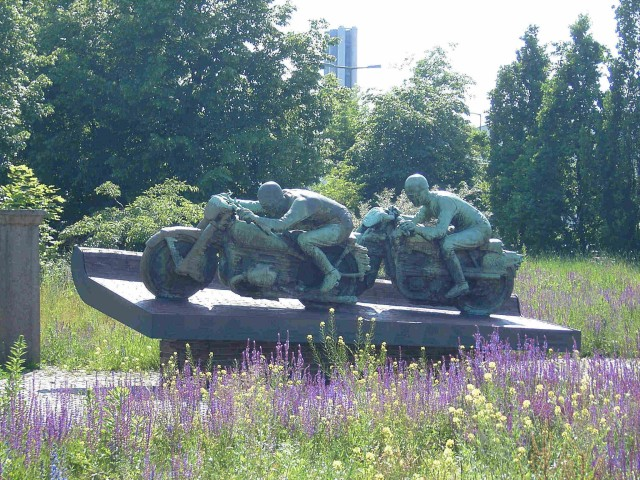
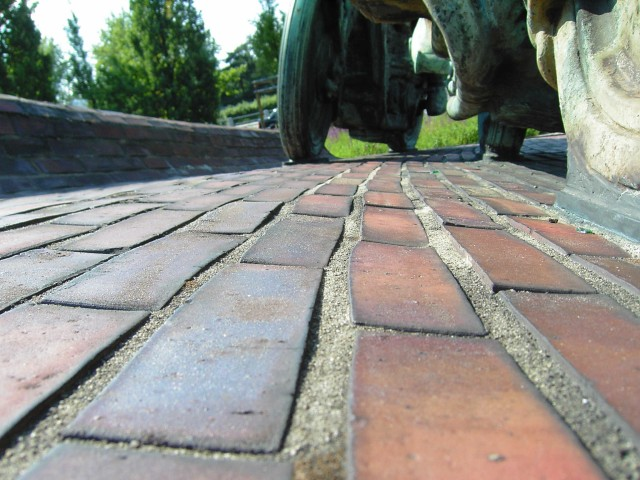

AVUS (Automobil Verkehrs und ‹bungs-Strafle), Germany Type: Street Circuit Photo's Taken: 8 June 2005 |
|
AVUS (Automobil Verkehrs und ‹bungs-Strafle), Germany Type: Street Circuit Photo's Taken: 8 June 2005 |
|
|| Contents || Nordkurve | Mercedes Building | Grandstands & Autobahn || Home ||

Numbers on the map represent the location where the photographs were taken. Click
hyperlinks above to view the photographs.
Return to racingcircuits.net's Photo Archive Main Index

The AVUS monument

The AVUS monument
Photographs kindly supplied by Sebastian Klemm. Reproduced here with kind permission.